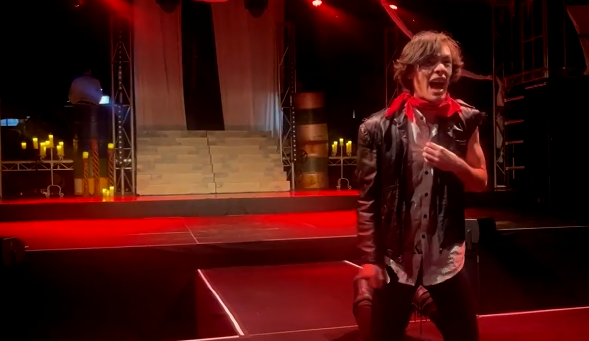
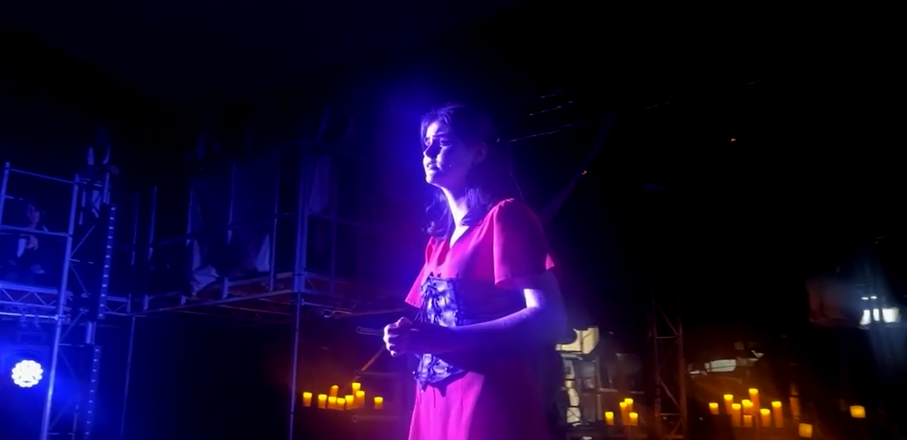
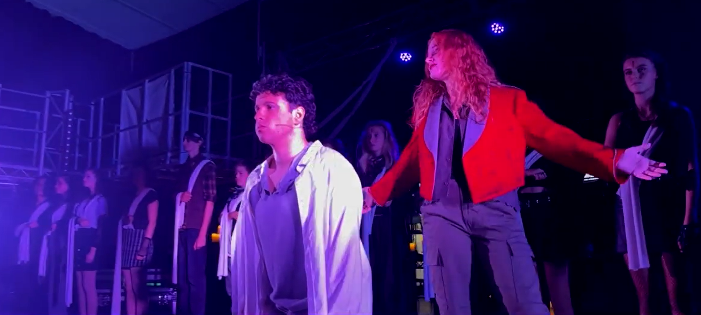

- The 2023 Senior School Production of Peninsula Grammar School
- Originally produced by Andrew Lloyd Webber and Tim Rice
- Directed by Lara Thompson
- Musical Direction by Simon Stone
The school play [or as we should now say the school musical] is an integral part of each schools’ fabric. Anyone interested in the arts, or performing, should strive to be part of a production. It is a rite of passage of the senior years, something which will stay with you all through your life. You will meet and make friends with like-minded people in the school production, who will be with you throughout your life. I have fond memories of participating in the School Play, way back in the 1950s.
Over the past several years I have been privileged to see musical productions of The Peninsula Grammar School which stand tall amongst other school productions and indeed amongst many professional productions. Those I can remember, include, ‘Into the Woods’, ‘Hairspray’, ‘Wicked’ [a far better production than that I saw in London in which I went to sleep] and a delightful production of ‘Little Shop of Horrors.’

Tonight, I was privileged to see a production of Webber and Rice’s ‘Jesus Christ Superstar’ in the school assembly hall, transformed into a wonderful theatre setting, with a thrust stage and a feeling of theatre in the round. The audience are set in a semicircular format, so the action takes place right in front of you, the audience is in the drama, it is a splendid concept.
 3D movies have got nothing on this!It is magnificently staged and directed by Lara Thompson, and the orchestra, which is set at the back of the stage and visible to the audience throughout, is beautifully directed by the amazing Simon Stone.
‘Superstar’ has been around since 1972. It’s first production in Australia was at the Palais Theatre St Kilda in 1973. I remember it caused quite a sensation. [It was the time of ‘Hair’ and that almost caused riots in the streets.] It was followed the same year by Norman Jewison’s hippy style film version. In 1992 we had the magnificent arena style production with John Farnham, Jon Stevens and Kate Cebrano. More recently in 2018 there was the excellent Broadway concert version with John Legend. A great memory of mine was seeing Michael Crawford perform ‘Gethsemane’ in his Melbourne concert of 1992 at the Hamer Hall. I thought, at the time, this was the ultimate version, [more of that later].
 Herod partying like its 30BC
Herod partying like its 30BC
The production tonight was flawless, movement, diction, emotion all of the highest quality. [The only quibble I have is that I would have liked to see more males playing the male roles, I imagine I’ll get into trouble for saying that, just call me old-fashioned] but the girls who filled the roles were spot on. The work was top-notch throughout. Everyone on the stage was first rate. I cannot continue without mentioning Riley Everett [King Herod] and his dancers, a standout. Lana Hutchison as Pilate, Jaimie Wood and Molly Hassett, as Peter and Simon, perfect. But special mention must go to Maya Wilkinson-Thurley as Mary. A deeply felt portrayal, I believed her totally.
 A pure soul with an effortlessly sweet voiceBut the accolades of the night belong to the two leads. It’s always been a bone of contention, since the first production, as to who is the leading man of this show. Usually, it comes out as the Judas. Tonight, Nicholas Bosnic as Judas was phenomenal. Vocally it was a revelation, I couldn’t believe this was coming from such a young man. His interpretation of the role is up there with the best.
 Pilate thinks Jesus needs to be whipped into shape At the same time Patrick Lazzar brought this reviewer to tears. Apropos of my earlier comments, I never thought I would experience a greater interpretation of ‘Gethsemane’ than Michael Crawford’s. Tonight, I was close to three feet away from Patrick Lazzar, as he sang his soliloquy, and I’m here to tell you this was theatre and emotion of the highest order. This boy’s performance now becomes my benchmark. I wept openly. A maternal interpretation of Pilate was truly inspired
A maternal interpretation of Pilate was truly inspired
My hearty congratulations to everyone concerned with this production. I cannot wait for the next outing.
Star Rating: 5/5 - A triumph! A triumph!